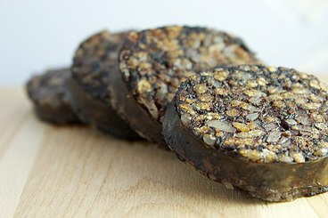

Rellenos Morcilla
La morcilla, también llamada mbusia (nombre proveniente del guaraní), morcillona, rellena, moronga, prieta o relleno, es un embutido a base de sangre cocida, generalmente de cerdo. Suele mezclarse con grasa de cerdo, cebolla y diferentes especias, además, contiene algún otro ingrediente no cárnico para aumentar su volumen, como arroz, cereales o miga de pan. Es un alimento que se elabora en muchos países y del que existen muchas variedades. Su elaboración ha estado desde siempre unida a la matanza del cerdo, rara vez a otros animales como la vaca o el caballo.
En Perú la morcilla es llamada "relleno" y se prepara con intestino grueso de cerdo relleno de sangre de res o cerdo, de forma artesanal o industrial. Generalmente contiene pequeños trozos de ají amarillo, hierbabuena y cebolla china e incluye parte de la grasa animal. Se consume frito en rodajas para el desayuno dominical criollo, acompañado de camote frito y pan, aunque en las zonas de sierra se consume junto a la papa sancochada y ensalada de cebolla. Otra forma de consumo es en sánguche. En Chincha se adiciona arroz cocido, azúcar y sangre de cerdo; el preparado terminado tiene un tono de dulzor característico. Fuente(plagio)
Arriba